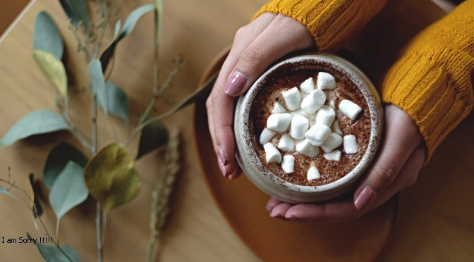
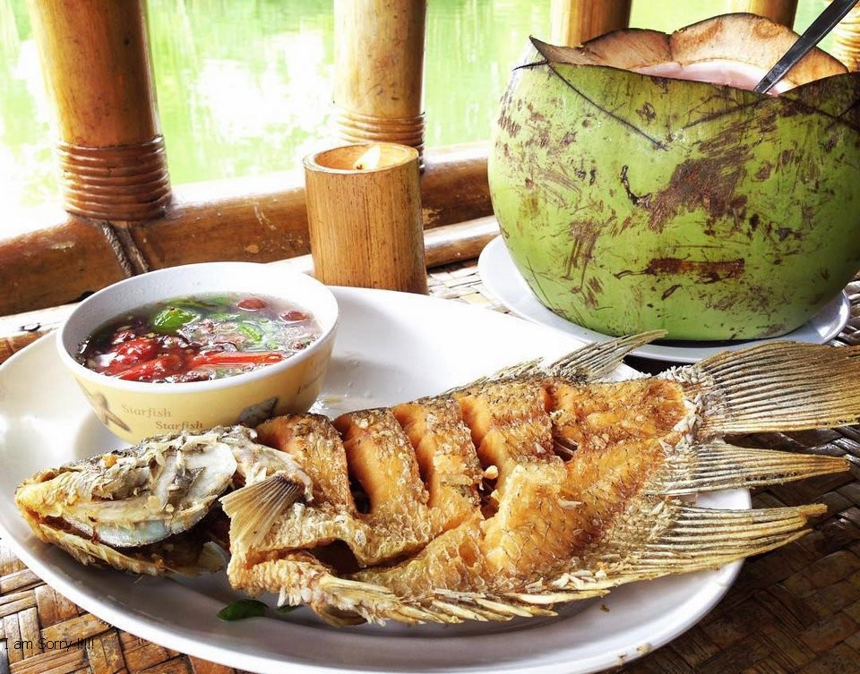
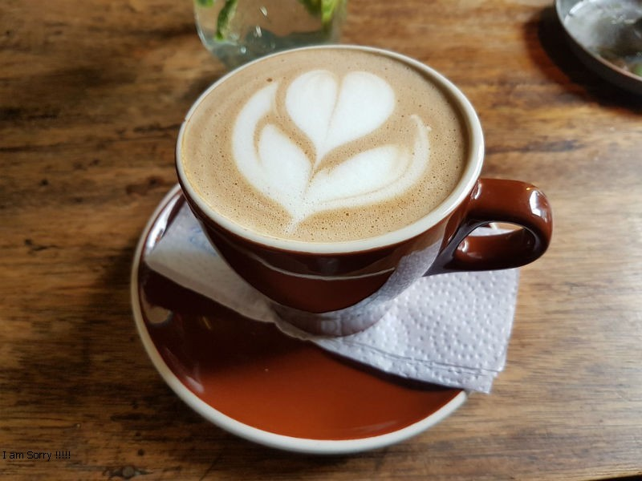

Latest Post

Mar 01, 2021
Most Instagrammable Cafe/Resto in BSD
Rekomendasi Tempat Makan/Cafe dengan Desain tempat menarik di BSD.

Mar 02, 2021
Khas Indonesia Terbaik!
Rekomendasi tempat makan Khas Indonesia Terbaik di BSD.
Mar 03, 2021
Kuliner Khas Jepang Terbaik di BSD
Rekomendasi tempat makan Jepang yang ada di BSD.

Mar 04, 2021
Coffee First!
Rekomendasi Cafe dengan Kopi Terbaik yang ada di BSD.

Mar 05, 2021
Refresh Your Day!
Rekomendasi minuman dan Dessert Terbaik yang ada di BSD.